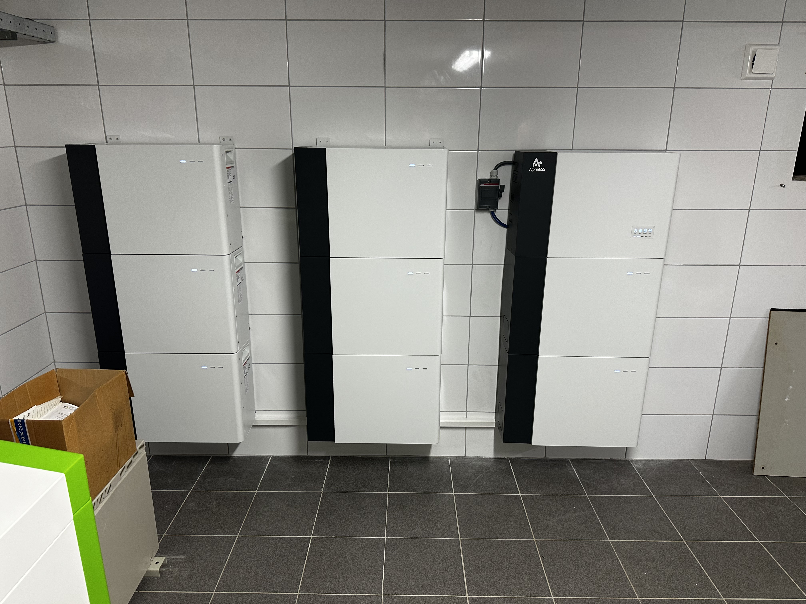
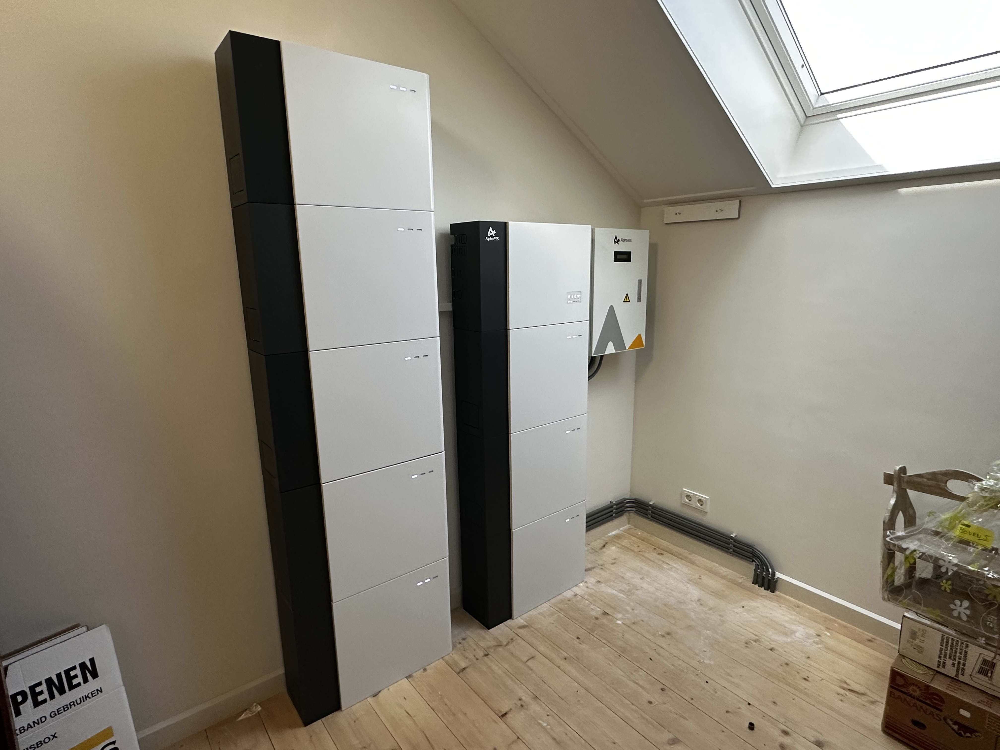
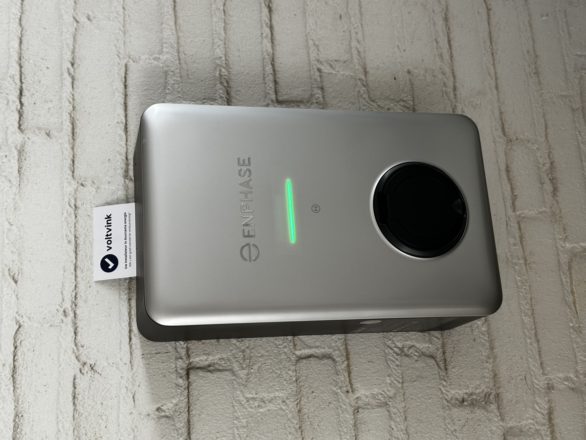
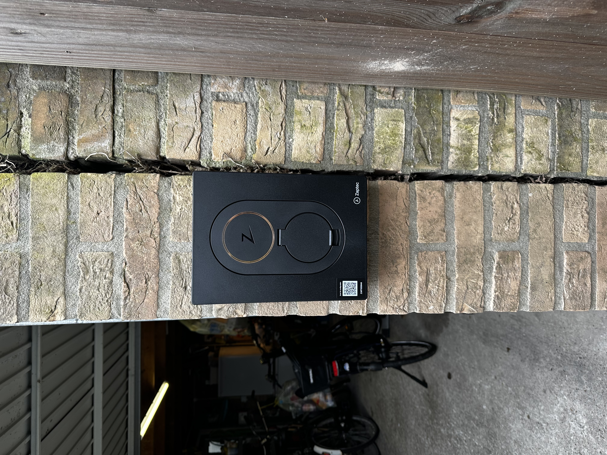
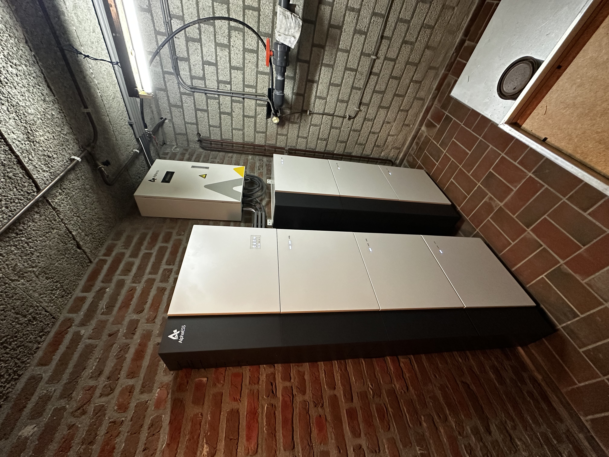
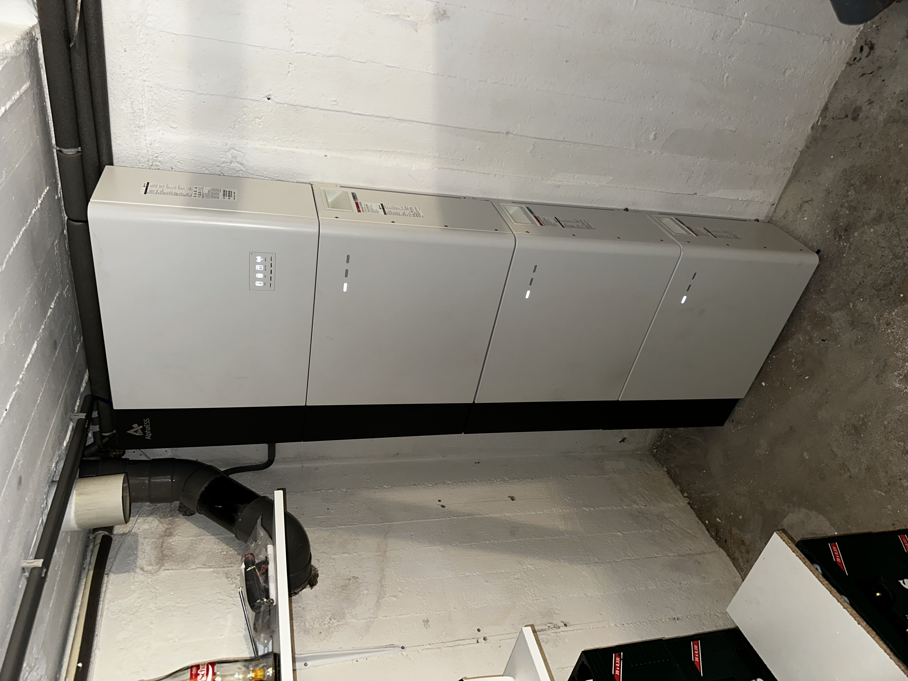

Groot buitensysteem – vrijstaande woning
Twee thuisbatterijen met buitenomvormer langs de achteringang gemonteerd. IP-gecertificeerd voor buiten, strak wegbekabeld en klaar voor weer en wind.

Drie systemen – commerciële locatie
Drie complete opslagsystemen naast elkaar op een commerciële locatie. Nette wandmontage op betegelde wanden, volledig bedrijfsklaar opgeleverd.

Uitgebreid opslagsysteem – zolderkamer
Twee grote batterijsystemen met hybride omvormer in een lichte zolderkamer geplaatst. Hoge capaciteit voor maximale onafhankelijkheid van het net.

Zonnepanelen – meerdere woningen
Zonnepanelen geplaatst op meerdere rijtjeswoningen tegelijk. Alle dakpannen zorgvuldig teruggelegd, alles netjes afgewerkt en op tijd opgeleverd.

Thuisbatterij + omvormer – bijkeuken
Thuisbatterij met omvormer netjes weggewerkt in de bijkeuken. Strak gemonteerd, veilig en volledig gebruiksklaar opgeleverd zonder rommel achter te laten.

Thuislader – woonwijk Limburg
Slimme thuislader gemonteerd aan de buitenmuur. Koppelt automatisch met het thuisnetwerk en laadt uw auto bij als de zon schijnt.

Laadpaal – carport aan bakstenen pui
Compacte laadpaal ingebouwd onder de carport. Weersbestendig, onopvallend en volledig geïntegreerd met de bestaande groepenkast.

Thuisbatterij – garageinstallatie
Batterijsysteem gemonteerd in de garage. Goed bereikbaar voor onderhoud, volledig afgeschermd en netjes wegbekabeld langs de wand.

Horizontale plaatsing – baksteenkelder
Twee batterijen liggend opgesteld in een gewelfde baksteenkelder. Slimme horizontale plaatsing benut de lage ruimte maximaal, zonder in te leveren op capaciteit.

Energiesysteem – nieuwbouwwoning
Batterij en omvormer geïnstalleerd voor oplevering van de woning. Direct klaar voor zonnepanelen en thuisladen — een volledige energiehub vanaf dag één.

Vier modules – betonnen kelder
Vier batterijmodules horizontaal gemonteerd in een betonnen kelder. Ruimtebesparend en veilig weggewerkt, ideaal voor woningen zonder apart technisch lokaal.

Twee thuisbatterijen – wasruimte
Twee batterijmodules compact naast de wasmachine geplaatst. Slim benut de ruimte die er al was, zonder aparte technische ruimte te hoeven bouwen.